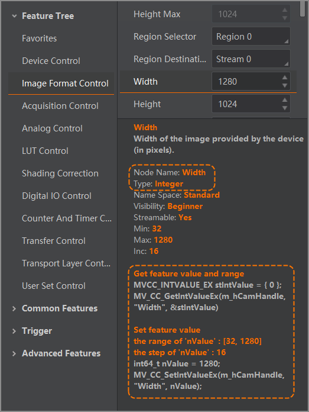

The SDK can access and configure the device parameters via GenICam Standard Protocol, and provides a set of parameter configuration APIs commonly used for cameras and frame grabbers to get and set parameter nodes of 6 types (integer, enumeration, float, boolean, string, and command).
Node Name and Node Type Search
APIs of
getting/setting nodes require configuring the node name and node type.
Therefore, before calling these APIs, you need to get the node name and node type via search on the client.
-
Connect to the device via the client.
-
Select a certain feature parameter on the client feature tree to view the parameter node information below the feature tree.
- Note
- If the client version is 4.4.0 or later, you can check calling example of node.
The following is an example of the parameter Width.

- Note
- For more details, refer to the client user manual.
Refer to the sample code in this chapter to get and set node value in your program.
Exclusive Configuration of GigE Cameras
-
Set Optimal Packet Size
Before you start grabbing image after opening GigE camera, call MV_CC_GetOptimalPacketSize() to detect current network, and get optimal communication packet size.
You can configure the packet size of image grabbing with this packet size to maximize bandwidth usage, and improve the transmission speed of image grabbing.
{
if (nPacketSize > 0)
{
Check(nRet);
}
}
-
Set Resending Packet
GigE device communicates data via network, so in some abnormal cases such as network congestion, data packet received from the SDK is incomplete. Resending command can control the device resend the incomplete part.
- Attention
-
Resending packets supported by the camera are available.
-
For occasional network congestion, you can address occasional packet loss through resending.
-
For continuous network congestion, it is recommended to troubleshoot the exception and optimize the network. Enabling resending packet directly may result in worsen network congestion. Use this function with caution.
-
You can refer to the following example, and call MV_GIGE_SetResend() to start resending packet.
unsigned int bEnable = true;
unsigned int nMaxResendPercent = 10;
unsigned int nResendTimeout = 50;
Check(nRet);
-
bEnable: Whether to enable resending packet
-
nMaxResendPercent: Configure resending the packet loss of the current frame. Do not resend the exceeding part to avoid worsening network congestion. When this value is set to 100, SDK will resend all packet loss of the current frame.
-
nResendTimeout: Configure timeout of resending packet. Start counting time when the frame ends. If the counted time exceeds the set timeout, SDK will not request resending this packet loss data.
-
After sending the resending command, you need to resend request if SDK doesn’t receive response of the device and data resent.
You can refer to the following example, call MV_GIGE_SetResendTimeInterval() to control the interval of single resending packet, and call MV_GIGE_SetResendMaxRetryTimes() to configure maximum resending times.
unsigned int nMillisec = 10;
Check(nRet);
unsigned int nRetryTimes = 20;
Check(nRet);
-
nMillisec: It refers to the interval between two resending requests for one resending packet (10 ms by default). The shorter the interval is, the more network resources occupied by the resending packet are, increasing the pressure of network and device.
-
nRetryTimes: 20 by default. It represents that for single packet loss data, SDK can request resending command for 20 times at most.
Exclusive Configuration of U3V Cameras
-
Control channel is used to configure control command. Abnormal control channel may result in slower execution of transmission control command, and therefore, the interface times out and exception messages will be returned.
You can refer to the following sample code, and call MV_USB_SetSyncTimeOut() to adjust timeout of control channel, so as to be compatible with this type of exception.
unsigned int nMills = 1000;
Check(nRet);
-
Stream channel is used to configure image grabbing. Insufficient bandwidth of stream channel or system resources may result in transmission failure and resource creation failure.
You can refer to the following sample code, and call MV_USB_SetTransferSize() to adjust the packet size, or call MV_USB_SetTransferWays() to adjust number of U3V streams, so as to reduce resourced occupied by SDK.
unsigned int nTransferSize = 1*1024*1024;
Check(nRet);
Unsigned int nTransferWay = 2;
Check(nRet);
Exclusive Configuration of Serial Port Devices
Serial port device is connected via serial port, and the communication protocol complies with GenCP. For this type of device, you can call
MV_CAMERALINK_DEVICE() for enumeration.
- Note
- Serial port devices include light controllers and Camera Link cameras.
When the device communicates through serial ports, you can change the baud rate to improve transmission speed. Details are as follows: